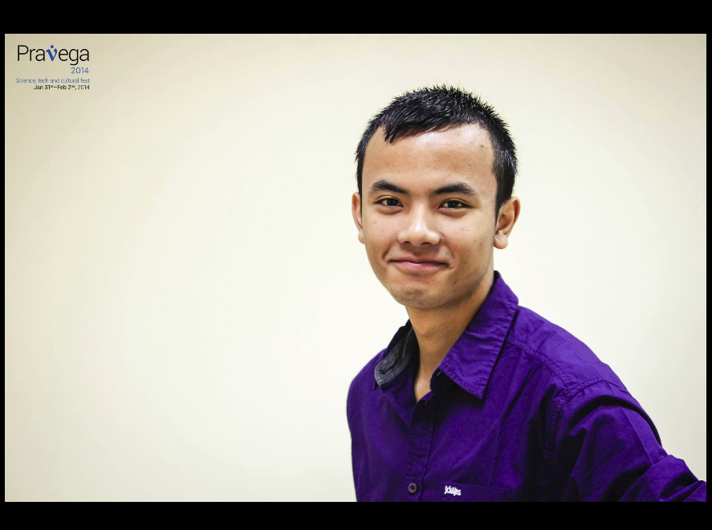

- Materials Research Centre, IISc Bangalore
- Undergraduate, B.Sc. (Research)
I participated in the International Workshop on Physics of Semiconductor devices (2015) and induldged in open communication and discussion with other researchers, scientist and distinguists Professors from all over the world. I had a very exciting experience and wonderful exchange of knowledge with many researchers.
I recently submitted my work on "The Journal of Chemical Physics, AIP Publishing" and it has been accepted for publication on 2nd December, 2015 after one minor revision.
I have fulfilled the credit requirements for my degree program with one-year remaining in the program. I plan to devote myself into learning through research and solving research problems. I find this approach of learning more productive and retentive.
I joined Centre for Fuel Cell technology, ARCI, Chennai as a project student under the guidance of Dr. R. Balaji. I was assigned to investigate the anion exchange membrane, Selemion AMV. I successfully completed the project and took a step forward by performing a detailed analysis of the results which led to identification of important trends/characterstics of the membrane under different solutions with respect to time. I had a great experience working at CFCT, ARCI.
I joined Prof. Abhishek Kumar Singh's group for taking up a scientific project, as an undergraduate researcher. I am blessed with such a wonderful mentor who have been consistently motivating me to look beyond my reach and challenge my limits. Moreover, the members of the group are unique and the most wonderful people, with expertise in their research. I have benefited a lot from their company.
I was offered admission at the Indian Institute of Science, Bangalore (2012) in the Undergraduate Program, Bachelor of Science (Research). Furthermore, I was granted the INSPIRE fellowship by the Department of Science and Technology to assist with my studies and support for any contingency work related to scientific research. I took Materials Science as my Major after completing the basic courses. I have never looked back, since.
I qualified my Pre-University College examinations with distinction in all the subjects, (2012). My total qualifying marks was 937/1000. It is worth mentioning that I scored 300/300 in Mathematics.
I joined the Sri Chaitanya Junior College, Ameenpur for my intermediate studies. I studied Mathematics, Physics, Chemistry, English and French along with rigorous training for competitive examinations.
I qualified the matriculation examinations by clearing all the subjects with distinction. The examination was conducted by Central board of secondary education (CBSE), 2010. I appeared the exams for the following subjects: General Science, Social Science, Mathematics, English and Manipuri (IInd Language). I qualified all the subjects with distinction and securing an over-all grade of 9.2 CGPA of 10.
I was selected as the best contestant for the work experience camp in the State level science exhibition cum work experience camp, 2010. I was invited to represent the state of Manipur at the Birla Industrial and Technological Museum (BITM), Kolkatta. At the helm of BITM, I participated for the work experience camp and the national level BITM Quiz competition. We bagged the 1st place in the quiz competition.
I qualified the National Talent Search Examination (NTSE) 2008. The National Talent Search Examination was conducted by the National Council of Educational Research and Training (NCERT) with the aim of selecting 500 bright students from all over the country. The evaluation scheme for the qualification was divided into 3 tiers, where the candidate is initially required to qualify for a state level written examination followed by a national level written examination. Finally, the candidate has to appear for the interview which checks the candidate's understanding of the subject, awareness of current-affairs, ability to apply assimilated knowledge, adaptability to a situation, etc. I was one of the 5 students selected for the NTSE scholarship program from the state of Manipur. Thereafter, I continued to receive a scholarship of ₹ 6,000 annually.
I joined the Sainik School Imphal as a cadet at the age of 10 years. The admission process includes an entrance exam which test the candidate's understanding of Mathematics at a primary level, English, and general aptitude test. Moreover, the candidate has to qualify an interiew round and a medical test which is processed under the guidelines of the Indian defence services. I was placed 2nd in the order of merit of the entrance exam (All India Sainik School Entrance Examinations, 2005). I was given the privilege of receiving a scholarship of ₹ 11,000 annually for outstanding academic performance.
I started my primary school at Maria Montessori School, Koirengei at the age of 3 years.
My brothers: Brajajeet and Daniel joined the family on 18th June, 1996 and 1st July, 1997 respectively.
I was born on 22nd May, 1995 at Imphal City, Manipur.
me@MRC
THSIM@MRC